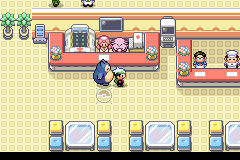
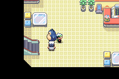
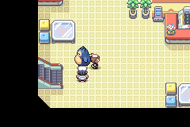

World Hub: matching NPC artwork
The harbor master and curator now use the FRLG sheets already bundled with the game, matching the Hub’s room art, nurse and attendants. These are the only two game-data changes.
50/50 tracked suites passAll outfits + small / large / shiny followers checked
Quick review: compare the two characters below, then watch their movement. Expand the later sections for the full direction, outfit and environment samples.
Ready-to-play buildDownload ROM + prepared save
Open the included ROM with its matching save. You start near the harbor master with Pichu. Talk to him, walk around the left end of the counter to the curator’s north side and talk facing down, then walk past the nurse at the lower central counter. B declines the curator’s repeat-tour offer. This short route was verified on the unmodified ROM.
Pixel scale
Harbor master
Before · ordinary map-facing direction
After · ordinary map-facing direction
Before · walking, return, jump shadow
After · walking, return, jump shadow
Charm curator
 Before · ordinary map-facing direction
Before · ordinary map-facing direction
 After · ordinary map-facing direction
After · ordinary map-facing direction
Before · walking, return, jump shadow
After · walking, return, jump shadow
All four directions · matched before/after
Harbor · down · before
Harbor · down · after
Harbor · left · before
Harbor · left · after
Curator · right · before
Curator · right · after
Nurse and Chansey · pixel-identical control scene
 Before · 0 changed pixels
Before · 0 changed pixels

After · 0 changed pixels
All 12 player outfits + representative entry/menu returns
 Brendan · red
Brendan · blue
Brendan · green
Brendan · purple
Brendan · black
Brendan · pink
May · red
May · blue
May · green
May · purple
May · black
May · pink
Brendan · red
Brendan · blue
Brendan · green
Brendan · purple
Brendan · black
Brendan · pink
May · red
May · blue
May · green
May · purple
May · black
May · pink

Outfit 0 · actual west stairs · 12:00 · after menu
 Outfit 0 · actual west stairs · 22:00 · after menu
Outfit 0 · actual west stairs · 22:00 · after menu

Outfit 11 · actual west stairs · 12:00 · after menu
 Outfit 11 · actual west stairs · 22:00 · after menu
Outfit 11 · actual west stairs · 22:00 · after menu
Service and intro samples · three follower variants
All nine tour stops and all 16 service approaches were traversed with Pichu, Snorlax and shiny Snorlax. All fourteen NPCs were visibly sampled across the route; the camera does not load every map event at once.
Route 35 and National Park readability · day/night
These maps and placements are unchanged. Captions name authored anchors; runtime coordinates and visibility are recorded in the actor CSVs. Moving Pokémon can leave their anchor. Day/night hide flags remain active.
Engineering evidence and provenance
1,980 targeted checks pass, plus 50 tracked suites. Development and release configurations build; all content validators retain their baseline. The local playtest package uses the tested development configuration required by RELEASING.md.
Validation record and limits · Reproduction commands · Capture hashes and pixel differences